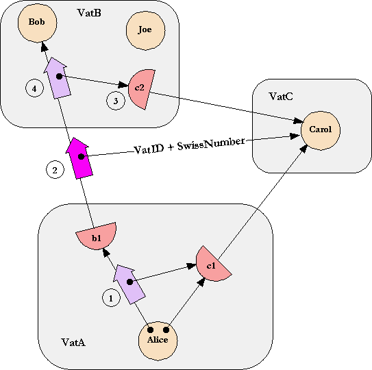

| |
Unibus
Sketch |
||||||
It seems the E project has given the impression that cryptographic capabilities are necessarily based on public key cryptography. Indeed, it has been claimed that the security properties of capabilities can only be understood in terms of their mapping to public key constructs + the security properties of these public key constructs themselves.
To demonstrate the independence of capabilities from public key, here is the outline of a protocol for distributed cryptographic capabilities, with the capability security properties defined here, but implemented using only single key cryptography with no centrally trusted party of any sort. This protocol may be impractical for various non-security engineering reasons (implicit storage obligations vs garbage collection, handling of race conditions, support for off-line capabilities, etc), but it is security-equivalent to the PK-based protocol, Pluribus, we present in the above paper and here. A practical version of the following single-key protocol may be derivable from the following sketch.
Because it is a single key variant of Pluribus, and in fond memory of the PDP-11, we name this protocol Unibus.
Supporting Only Pure Capabilities
Let's talk the protocol through using the same diagram we use to talk through Pluribus:

Once again, we are concerned with inductive correctness, so assume there is already a secure connection set up between VatA and VatB, as well as one between VatA and VatC. But not yet between VatB and VatC. Following the methodology of inductive correctness, these connections have the same security properties as the connection we will forge between VatB and VatC.
Note: by "private key" I mean shared secret information adequate for a running SSL-like connection, including encryption key (eg triple DES), MAC, and initialization vector.
In step 1, proxy b1, seeing an argument which is a proxy to a different remote vat, generates a new secret key K which it sends over the existing secure channels to both VatB and VatC. It sends K to VatB as the network representation of the Carol argument of this message (step 2). It also sends K to VatC in a message meaning "expect someone to contact Carol using this K". Since this step doesn't correspond to anything on the existing diagram, let's call it step 2a.
This private key, K, substitutes for the "VatID + SwissNumber" on the diagram.
In step 3, VatB contacts the alleged VatC according to TCP/IP hint information exactly analogous to this aspect of Pluribus. However, on contact, the handshake proceeds differently. VatB states a hash of the secret, K, it supposedly shares with the alleged VatC, and then simply begins an SSL-like session, post handshake, starting from state 0. VatB would send a first test message on this session and await a response before creating proxy c2. If VatC is an impostor, then VatC will not be able to decrypt any of VatB's communication, and will not be able to send data which MAC-authenticates.
If alleged VatC sends back a response that VatB MAC-authenticates, then VatB creates proxy c2 and (step 4) delivers to Bob an object message with c2 as argument. Any messages sent to c2 are encoded and sent to Carol over our newly constructed SSL-like channel, just like the original message to b1 was encoded and sent to Bob.
Now this protocol has one huge apparently fatal problem whose explanation does much to uncover some hidden assumptions. The apparent problem: VatA also knows the shared secret and can therefore be a MITM between Bob and Carol. VatB cannot authenticate that it is "really" VatC that he is now speaking to, rather than VatA. However, this doesn't matter. We state the capability authentication criteria here:
A capability is an arrow, and an arrow has two ends. There is an impostor problem in both directions. The VatID ensures that the entity that Bob is speaking to is the one that Alice meant to introduce him to. The Swiss number ensures that the entity allowed to speak to Carol is the one that Alice chose to enable to do so.
Though the Unibus protocol doesn't use VatIDs and SwissNumbers, it accomplishes this goal. If VatA wants to play MITM, then this MITM is the entity that she intended Bob to speak to, and the one she wished to enable to speak to Carol. This is logically- and security-equivalent to a situation that the objects could have expressed in the formalism. This is what we mean by "This is the main economy of the distributed capability model: we can, without loss of generality, reason as if we are only suspicious of objects." Alice could have explicitly set up a transparent forwarder object to Carol that also displayed all messages going by to Alice. Alice could have given Bob a reference to this object rather than c1. Expressing this in E, Alice in the non-MITM scenario would say:
bob.foo(c1)
whereas, in the MITM scenario, Alice would say:
def MITM match [verb, args] {
observe(verb, args)
E.send(c2, verb, args)
}
bob.foo(MITM)
The requires a bit of explanation. The "def ... match ..." form is used to define a plumbing object that can receive all messages sent to it generically, as a verb (the message name as a string) and a list of arguments. (This is as opposed to the normal object practice of dispatching on the message name.)
The "E.send(receiver, verb, args)" form is used to send a message generically. Therefore, the above two actions by Alice are behaviorally equivalent (so far) as far as Bob can tell. This protocol so far is a perfect implementation of pure capabilities without either a rights amplification primitive or an equality primitive, in that the protocol displays exactly the same vulnerability as such un-augmented pure capability systems.
Supporting Equality
However, all capability advocates advocate capability systems augmented with either or both of the above primitives -- rights amplification or equality. It seems that given either one, one can build the security-equivalent of the other, but without either you cannot build either. Most capability systems, including KeyKOS, EROS, and E, add equality as a primitive. Joule adds rights amplification as primitive, and has no primitive notion of equality. The Grant Matcher Puzzle explains, at the object level, how equality makes it meaningful for Bob to cut out MITM between him and Carol. (Bob == Grant Matcher, and Carol == KEQD.)
When, in E, Bob wishes to compare c2, the proxy representing the capability to Carol received from Alice, with, let's say, c3, the proxy representing the capability to Carol received from Dana, he would say:
def c4 := E.join(c2, c3)
Security-free synchronization issues aside, this either returns to Bob a new object reference that he can trust to designate both whatever c2 designates (to the satisfaction of introducer Alice) and whatever c3 designates (to the satisfaction of introducer Dana), or, if it cannot, it gives an exception. This is the only trust-combining primitive in E. In its absence, all references are received from a particular introducer, and can never be more trusted than is that introducer. With the primitive, the trust Bob can invest in c4 is a combination of the trust he can invest in c2 and c3, since c4 is mutually acceptable to both introducers as an interpretation of what they intend to designate. As the page explains, were Alice to pass her own MITM to Bob as in the above code, where that MITM is unacceptable to Dana, the above join() would fail.
How can we enhance our single-key protocol to support an equality primitive with security properties sufficient to support grant matching? There are many ways, all of which seem equivalent. For example, VatB could make up yet another secret key, xor it with a random mask, send the mask to c2 and the xored secret key to c3, both with a hash of the new secret key so that VatC can tell the two messages are "meant for each other". If VatC receives both messages and knows they are in regard to the same C-hosted object, eg, Carol, then VatC recovers the secret by xoring, verifies it against the hash (just a sanity check) and prepares to receive a connection request to Carol via this new secret, just as she did between steps 2a and 3 above. VatB meanwhile attempts to connect to the Carol designated by this secret key, just as in step 3 above. Should he succeed, VatB creates proxy c4 to represent the new connection.
This protocol protects against against MITM exactly when and how the object-level model says it should.
If anyone is interested, I can also explain a very painful and horribly impractical protocol which achieves cryptographic capability security + equality without a centrally trusted anything using only one time pads. I invented this back when I was worried that quantum computation may give us a general exponential speedup. One-time pads are the only currently realizable cryptography I am aware of that doesn't rely on assumptions of future computational limits. Given exponentially greater compute & communication, some variant of the protocol I have in mind might even be practical. Fortunately, it now looks like we don't need to worry about this.
And in any case, by presenting a single-key implementation of cryptographic capabilities + equality, I hope I have demonstrated that capabilities are independent of PK is the same sense that digital logic gates are independent of solid-state transistors. Both PK and transistors may be the substrates of choice, but other substrates are possible.
Acknowledgements
Besides myself, the lion's share goes to Norm Hardy for a sketch of a similar protocol, and one which would have been perfectly adequate for main main point I make. I believe there were also relevant contributions from Bill Frantz, Chip Morningstar, and Dean Tribble.
The insight that one can start with rights amplification and build up to the security-equivalent of equality is due to Dean Tribble, Tyler Close, and I believe Ka Ping Yee.
Unless stated otherwise, all text on this page which is either unattributed or by Mark S. Miller is hereby placed in the public domain.
| |
|
report bug (including invalid html)
|
||||||||